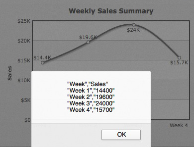

| Exporting Chart Data using JavaScript API | ||||||||||||
You can access the data of the chart from its JavaScript API as well. |
||||||||||||
| Setting up the chart to allow JavaScript export | ||||||||||||
|
When using the JavaScript API to access chart data, you first need to make sure of that you are invoking the getDataAsCSV() API only after the chart has been rendered (that is, in the FC_Rendered method). |
||||||||||||
<HTML>
<HEAD>
<TITLE>PowerCharts XT and JavaScript - Getting chart data as CSV </TITLE>
<SCRIPT LANGUAGE="Javascript" SRC="../../Charts/FusionCharts.js"></SCRIPT>
<SCRIPT LANGUAGE="JavaScript">
//FC_Rendered method is called whenever a chart on the page
//has finished initial rendering. To this function, the chart passes its
//own DOM Id.
function FC_Rendered(DOMId){
//If it's our required chart
if (DOMId=="chart1Id"){
//Get reference to the chart object
var chartObj = FusionCharts("chart1Id");
//Simply alert the CSV Data
window.alert(chartObj.getDataAsCSV());
return;
}
}
</SCRIPT>
</HEAD>
<BODY>
<div id="chart1div"> FusionCharts </div>
<script language="JavaScript">
var chart1 = new FusionCharts("../../Charts/Spline.swf", "chart1Id", "400", "300", "0", "1");
chart1.setXMLData("<chart caption="Weekly Sales Summary" xAxisName="Week" yAxisName="Sales" numberPrefix="$"><set label="Week 1" value="14400" /><set label="Week 2" value="19600" /><set label="Week 3" value="24000" /><set label="Week 4" value="15700" /></chart>");
chart1.render("chart1div");
</script>
</BODY>
</HTML>
|
||||||||||||
When you run this code, you should get a screen as under:  See it live! |
||||||||||||
| Customizing the output CSV | ||||||||||||
The customization attributes for exported CSV data still remain the same, as under (to be specified in chart XML): |
||||||||||||
|